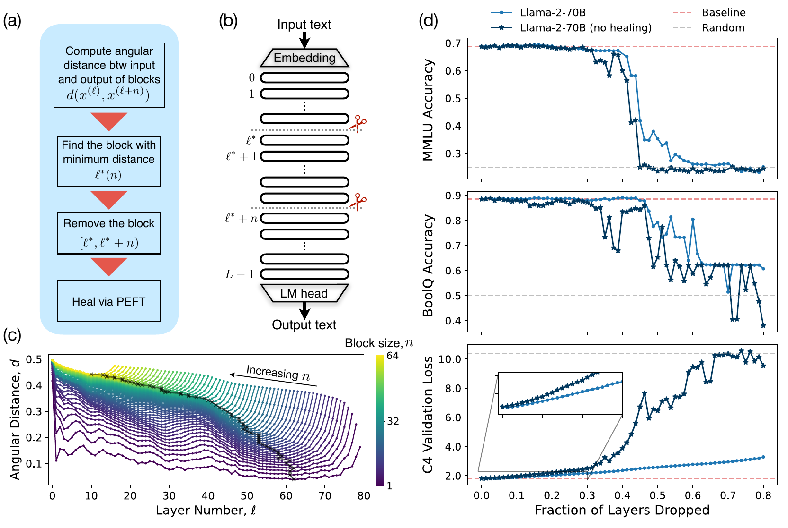
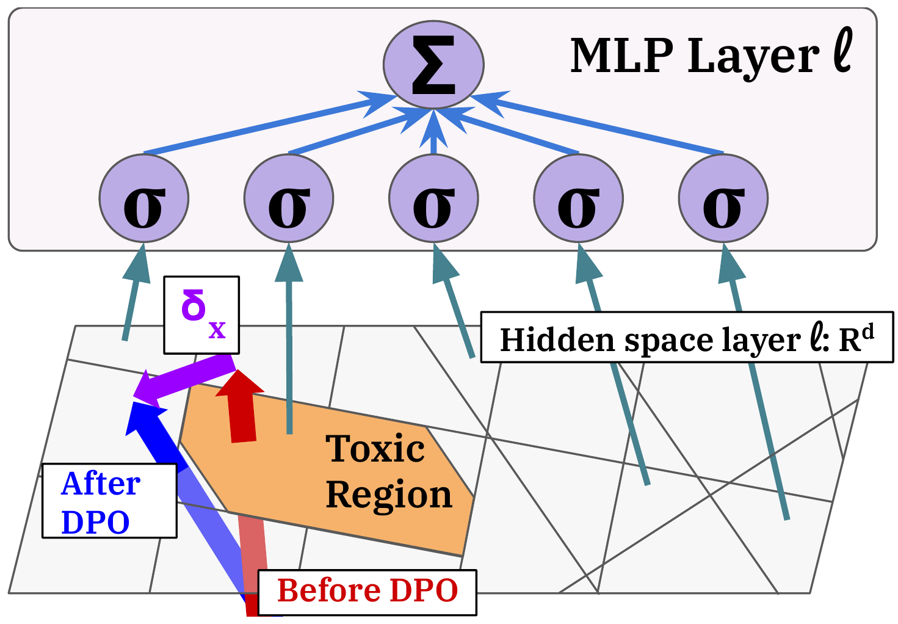
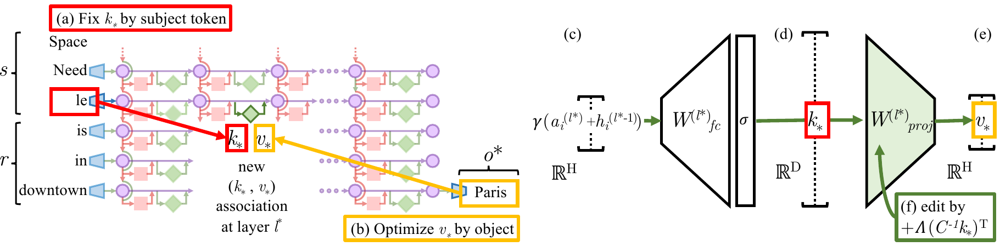
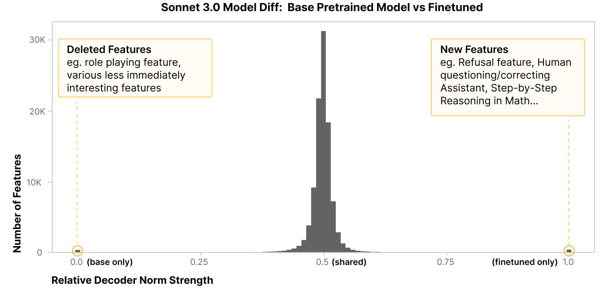

Zhiqian Chen Department of Computer Science Rochester Institute of Technology
One network, five graphs
Five graphs, one network. Which one you draw depends on what change you want to understand.
A released model is not left alone. Seven kinds of surgery.
Editedrewrite one wrong fact, leave the rest
Stitchedbottom of A, top of B, one small adapter
Mergedaverage two models into one
Pruneddelete parts, see what breaks
Steereda push on the internal state at run time
Unlearnedmake it forget, or only hide?
Fine-tunedthe most common surgery of all
Every one of these is accepted by an exam that only looks at answers. And if the model is a graph, every one is a graph operation. The map next.
The map: a model is a graph, and everything else is an arrow
inspires borrows the idea · critique shows where it fails · fix repairs it · same object two fields met the same thing · complement stages of one problem · cousin nobody inspired anybody
Key result: a fine-tune is an arrow you can add or subtract
Lesson 1
Ilharco et al., ICLR 2023. Ainsworth et al., ICLR 2023. Yadav et al., NeurIPS 2023. Hammoud et al., EMNLP Findings 2024
Key result: the middle is a shared workspace

Half the layers can go before scores drop
Cut out a chunk of middle layers and the model barely notices, until about half is gone. Only the first and last layers are irreplaceable.
(c) deep layers barely change their input
(d) delete the most self-similar block, heal lightly: QA flat until about half is gone
Sun 2025: middle layers can be skipped or shuffled, ends cannot
Graph reading: hubs at both ends, permutation-tolerant middle
Gromov et al., The Unreasonable Ineffectiveness of the Deeper Layers, ICLR 2025, Figure 1
Key result: one direction controls refusal
Lesson 1
Arditi et al., Refusal in Language Models Is Mediated by a Single Direction, NeurIPS 2024, Figure 1. Xu et al., ACL 2026
Critique: reliable on average, not per input
Tan et al., Analysing the Generalisation and Reliability of Steering Vectors, NeurIPS 2024, Figure 1. Wollschlager et al. 2025. Wu et al. 2025
Key result: bypass, and the before/after difference is readable
Lesson 2

Bypassed, not deleted
Safety training did not remove the toxic circuit, it taught the model to walk around it. And the before-versus-after difference still shows what the training was about.
After DPO the toxic region is still there, activations route around it
One simple intervention brings toxicity back
Minder 2026: base-vs-fine-tuned activation deltas reveal what the fine-tune was about, even on unrelated text
Li 2024 (WMDP): unlearning by steering, benchmark says clean success
The before/after delta carries readable signal. That is the premise of our paper.
Lee et al., A Mechanistic Understanding of Alignment Algorithms, ICML 2024, Figure 3
3. Knowledge editing: the smallest change there is
Fix one wrong fact, no retraining. Leave everything else alone.
Geva et al., Feed-Forward Layers Are Key-Value Memories, EMNLP 2021. Meng, Bau, Andonian, Belinkov, Locating and Editing Factual Associations in GPT, NeurIPS 2022
Founding: where a fact lives. Break it, then restore one piece at a time
a. clean run: "Seattle"
b. noise on the subject: answer gone
c, d. restore one state, test
e. all positions: two dark spots
f. MLP only: early site. g. attention only: late site
Break it, then restore one piece at a time
Break the model on purpose, repair one position at a time. The position whose repair brings the answer back is where the knowledge sits.
a Clean run says "Seattle". Every internal state is recorded
b Noise on the subject words. The answer disappears
c, d Put one clean state back, keep the rest broken, measure how much "Seattle" returns
e Repeat for every layer (columns) and word (rows). Dark = repair here restores the answer. Early site: subject word, mid layers. Late site: last word, deep layers
f, g MLP only (the lookup blocks): the early site stays. Attention only (the blocks that move information between words): the late site stays
Conclusion. Two jobs in two places: mid-layer MLPs at the subject look the fact up (librarian at the shelf), deep-layer attention at the last word carries it to the output (runner to the desk). Editing a fact means changing the shelf.
Meng, Bau, Andonian, Belinkov, Locating and Editing Factual Associations in GPT, NeurIPS 2022, Figure 1
Founding: how ROME rewrites the fact

Overwrite one entry with a rank-one update
The MLP is a lookup table: subject in, fact out. Store a new key and value with one small weight change.
(a) key: what the MLP sees at the subject's last word
(b) value: tuned until the model says "Paris"
(c to e) first matrix makes the key, second maps key to value
(f) add one rank-one term to the second matrix. Closed form, no retraining
MEMIT spreads thousands of facts over several layers. AlphaEdit protects old facts
Remember: one fact, one layer, one closed-form change. The cracks come next.
Meng, Bau, Andonian, Belinkov, Locating and Editing Factual Associations in GPT, NeurIPS 2022, Figure 4
The first crack: where a fact lives is not where editing works
Lesson 2
Hase, Bansal, Kim, Ghandeharioun, Does Localization Inform Editing?, NeurIPS 2023. Guo et al., ICML 2025
Key results: what died, what was born, and same score, different delta

How to read: one bar = how many features sit at that position. Across: 0 = only in the model before the update, 0.5 = shared by both, 1 = only after. A feature is one concept the model uses (role play, refusal, step-by-step math).
The few changes say what the update did
Most features are shared. The few that die or are born say exactly what the update did, including what nobody asked for. A score cannot show this.
Crosscoder (Lindsey 2024): one dictionary of features read from both models at once
Born: refusal, correcting the assistant, step-by-step math. Died: role play, which nobody meant to remove
Same score, different delta (Shuttleworth 2025): LoRA and full fine-tuning tie on score, but LoRA adds new directions that drive forgetting
Duan 2026: probes break after updates, so every update needs rechecking
Lindsey et al., Sparse Crosscoders for Cross-Layer Features and Model Diffing, 2024. Shuttleworth et al., 2025. Duan et al., 2026
Eight surgeries, three lessons
Ilharco et al., ICLR 2023. Meng et al., NeurIPS 2022. Arditi et al., NeurIPS 2024. Lee et al., ICML 2024. Hu et al., ICLR 2025. Hammoud et al., EMNLP Findings 2024. Kornblith et al., ICML 2019. Smith et al., ICML 2025. Gröger et al., ICML 2026
4. The exam every surgery must pass is a sample
A benchmark is a set of questions. "Passed" means "passed what we thought to ask."
Four receipts: the exam said pass
Editing. 96.8% success when the model is fed the correct prefix word by word (teacher forcing), 38.5% when it writes freely. The test was measuring the test. Yang 2025
Unlearning. Harry Potter "forgotten". A little fine-tuning on harmless general text and the original comes back word for word. Hu 2025
Merging. A safe chemistry expert averaged with an unsafe math expert passes every capability benchmark and inherits the unsafe behavior. Hammoud 2024
Pruning. A quarter of the layers removed and repaired: classification keeps 80 to 90%, math and code generation drop hard and do not come back. Shrestha 2026
Same shape every time: the benchmark passed, a side effect hid, and only a different, costlier test found it. Can an internal signal find it first?
What is a delta graph?
Ask the same questions before and after an edit, and see how the model's parts now work together differently.
Benbrahim et al., SDM 2026
Method: a connectome before and after the edit, in eight steps
Published
Benbrahim et al., SDM 2026, Figure 1.1 (panel b). Grouped CV by (model, fact). About 7.4 min per fact on one L40S
Results: same checking budget, more bad edits caught
Published
Benbrahim et al., SDM 2026, Tables 5.1 to 5.5
What carries the signal: size or shape?
Published
Benbrahim et al., SDM 2026, Table F.1, Tables 5.2 and 5.5
Limits, said first by the paper
Published
Benbrahim et al., SDM 2026, Table 5.1, Figure 5.2, Sections 5.2 to 5.6
5. Music: where does a style live?
Language models store facts. Music models store styles.
Hiller and Isaacson 1957. Pachet 2003. Pachet and Roy 2011. Jeong et al. 2019. Copet et al. 2023
Where I started: fusing two genres (2017)
Published
Chen, Wu, Lu, Lerch, Lu, Learning to Fuse Music Genres with Generative Adversarial Dual Learning, ICDM 2017
When the graph was the generator
Hiller and Isaacson, Experimental Music, 1959. Pachet, The Continuator, JNMR 2003. Pachet and Roy, Markov Constraints: Steerable Generation of Markov Sequences, Constraints 2011
When the graph described the score
Jeong et al., ICML 2019. Wu et al., 2020. Karystinaios and Widmer, ISMIR 2022. Zou et al., 2022. Cosenza et al., 2023. Lim, Liang, Zhang, 2024. Karystinaios et al., 2024
Then the graph disappeared: MusicGen
Copet et al., Simple and Controllable Music Generation, NeurIPS 2023. Défossez et al., High Fidelity Neural Audio Compression, 2022
Inside, part 1: what can be read out?
Castellon, Donahue, Liang, ISMIR 2021. Wei, Freeman, Donahue, Sun, Do Music Generation Models Encode Music Theory?, ISMIR 2024
Inside, part 2: what can be pushed?
Activation Patching for Interpretable Steering in Music Generation, arXiv 2504.04479. Zhao, Beaglehole, Berg-Kirkpatrick, McAuley, Novack, ICLR 2026
Inside, part 3: what concepts exist?
Singh, Cherep, Maes, Discovering and Steering Interpretable Concepts in Large Generative Music Models, arXiv 2505.18186. Paek, Zang, Yang, Leistikow, arXiv 2510.23802
Every tool so far is a vector
Ameisen et al., Circuit Tracing: Revealing Computational Graphs in Language Models, Transformer Circuits 2025
Reading a graph out of a sequence model
Weiss, Goldberg, Yahav, ICML 2018. Dong et al., ASE 2020. Markovian Circuit Tracing for Transformer State Dynamics, arXiv 2605.20824 (preprint)
Our observation: steering a style is one way
Under review
Co-authored work under review
A graph over musical states, built from data
In progress
Next: the graph inside MusicGen
In progress
What a hidden graph would explain
Open question
6. Two hidden graphs, one question
What I am not claiming
Where I would love your help
What to take home
Esc or click a slide to return · click any slide to jump